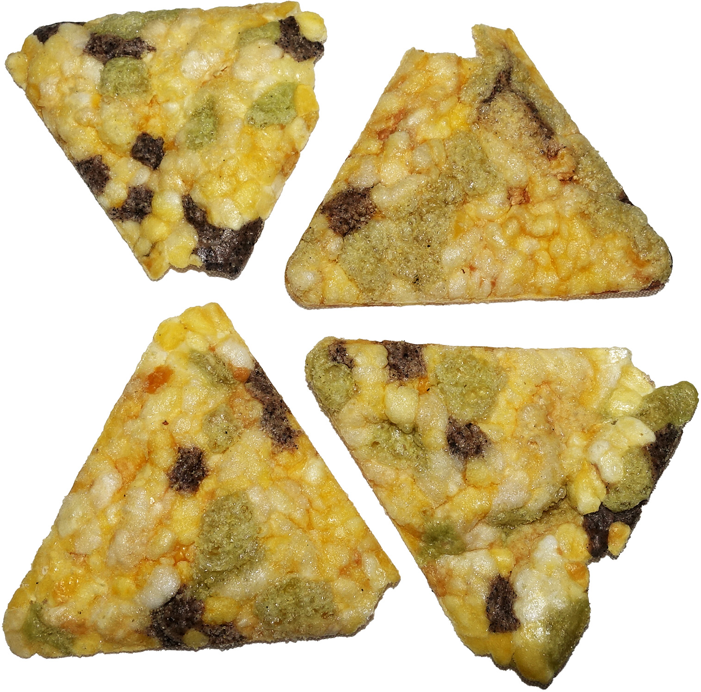

Draft only · noindex,nofollow · PL/EN · P1/P2 remediated
Strączki bez wzdęć
Lead PL: Strączki bez wzdęć: łagodne zwiększanie strączków, aby brzuch miał czas przyzwyczaić się do błonnika i fermentujących węglowodanów. Ten szkic ma pomóc czytelnikowi podjąć kilka małych decyzji w zwykłym tygodniu, bez obietnic leczenia, bez straszenia i bez planu, którego nie da się utrzymać przy pracy, rodzinie albo podróży.

Najważniejsze wnioski
- Najpierw nazwij sytuację: stopniowe wprowadzanie strączków, aby zwiększać błonnik bez wojny z brzuchem.
- Pierwszy krok to: zacznij od dwóch łyżek dobrze przepłukanej soczewicy lub ciecierzycy, nie od wielkiej miski fasoli.
- W praktyce oprzyj posiłki o: soczewica czerwona, ciecierzyca z puszki, tofu, tempeh, pasta z fasoli, zupy krem i małe dodatki do sałatek.
- Nie idź w skrót: zbyt szybkie zwiększenie porcji potrafi zniechęcić, mimo że sam produkt nie musi być problemem.
Po co ten temat
Strączki bez wzdęć dotyczy przede wszystkim sytuacji: stopniowe wprowadzanie strączków, aby zwiększać błonnik bez wojny z brzuchem. Najlepszy punkt wyjścia to zwykły tydzień, w którym da się powtórzyć podobne posiłki i zauważyć, co naprawdę pomaga. Artykuł nie ustawia jednej idealnej diety; porządkuje decyzje, które mają największą szansę być wykonane.
Pierwszy rozsądny krok
Pierwszy krok: zacznij od dwóch łyżek dobrze przepłukanej soczewicy lub ciecierzycy, nie od wielkiej miski fasoli. Dzięki temu zmiana jest mierzalna i nie zamienia się w chaotyczne usuwanie produktów. Jeśli po kilku dniach nie da się jej utrzymać, warto uprościć warunki, a nie dokładać kolejne zakazy.
Co realnie położyć na talerzu
W praktyce przydadzą się: soczewica czerwona, ciecierzyca z puszki, tofu, tempeh, pasta z fasoli, zupy krem i małe dodatki do sałatek. Taki zestaw daje punkt zaczepienia w sklepie i w kuchni. Nie każdy element musi pojawić się codziennie; ważniejsze jest, żeby posiłek miał funkcję: sycić, ułatwiać regularność albo zmniejszać liczbę przypadkowych decyzji.
Zakupy i przygotowanie
Przy zakupach warto wybrać dwie wersje: domową i awaryjną. Domowa może być tańsza i bardziej powtarzalna, awaryjna ma ratować dzień, kiedy plan się rozsypuje. Wtedy czytelnik nie musi wybierać między perfekcją a całkowitym porzuceniem nawyku.
Najczęstsza pułapka
Najważniejsza pułapka: zbyt szybkie zwiększenie porcji potrafi zniechęcić, mimo że sam produkt nie musi być problemem. To szczególnie istotne w treściach zdrowotnych, bo radykalna rada często brzmi atrakcyjnie, ale nie daje lepszego monitorowania objawów ani jakości diety. Lepiej zmienić jeden element i wiedzieć, co się sprawdza.
Plan na najbliższy tydzień
dodaj strączki do trzech posiłków w bardzo małej porcji i notuj objawy bez oceniania po jednym dniu. Do obserwacji wystarczą trzy sygnały: głód lub sytość, komfort trawienia oraz łatwość powtórzenia planu. Wyniki badań, masa ciała czy objawy przewlekłe wymagają dłuższego horyzontu niż jeden weekend.
Kiedy nie działać samodzielnie
silny ból, krew w stolcu, chudnięcie, nocne objawy albo podejrzenie IBS wymagają konsultacji. Ten tekst jest edukacyjny i nie zastępuje diagnozy, leczenia ani indywidualnej konsultacji z lekarzem lub dietetykiem.
FAQ
Od czego zacząć przy temacie: strączki bez wzdęć?
Zacznij od najprostszej obserwacji: zacznij od dwóch łyżek dobrze przepłukanej soczewicy lub ciecierzycy, nie od wielkiej miski fasoli. Jedna zmiana daje lepszą informację niż pięć działań wprowadzonych jednocześnie.
Czy potrzebuję specjalnych produktów?
Zwykle nie. Najpierw wykorzystaj proste opcje: soczewica czerwona, ciecierzyca z puszki, tofu, tempeh, pasta z fasoli, zupy krem i małe dodatki do sałatek. Produkty specjalistyczne mają sens dopiero wtedy, gdy rozwiązują konkretny problem, a nie tylko wyglądają zdrowiej.
Kiedy dieta nie wystarczy?
silny ból, krew w stolcu, chudnięcie, nocne objawy albo podejrzenie IBS wymagają konsultacji. W takich sytuacjach dieta może być wsparciem, ale nie powinna opóźniać diagnostyki ani leczenia.
Nota bezpieczeństwa
Artykuł ma charakter edukacyjny i nie zastępuje diagnozy, leczenia ani indywidualnej konsultacji medycznej lub dietetycznej. silny ból, krew w stolcu, chudnięcie, nocne objawy albo podejrzenie IBS wymagają konsultacji
Legumes without bloating
Lead EN: Legumes without bloating: gently increasing pulses so the gut has time to adapt to fibre and fermentable carbohydrates. This draft helps the reader make a few small decisions in an ordinary week, without treatment promises, scare tactics or a plan that collapses around work, family or travel.
Key takeaways
- Start by naming the situation: stopniowe wprowadzanie strączków, aby zwiększać błonnik bez wojny z brzuchem.
- The first step is to start with two tablespoons of well-rinsed lentils or chickpeas, not a large bowl of beans.
- In practice, build around: red lentils, canned chickpeas, tofu, tempeh, bean spreads, blended soups and small salad additions.
- Avoid the shortcut that increasing portions too fast can discourage you even when the food itself is not the problem.
Why this topic matters
Legumes without bloating is mainly about this situation: stopniowe wprowadzanie strączków, aby zwiększać błonnik bez wojny z brzuchem. The best starting point is an ordinary week in which similar meals can be repeated and patterns can be noticed. The article does not prescribe one perfect diet; it organises the decisions most likely to be carried out.
The first sensible step
The first step is to start with two tablespoons of well-rinsed lentils or chickpeas, not a large bowl of beans. This makes the change measurable and prevents chaotic food removal. If it cannot be maintained after a few days, simplify the conditions rather than adding more rules.
What to put on the plate
Practical options include: red lentils, canned chickpeas, tofu, tempeh, bean spreads, blended soups and small salad additions. This gives the reader a shopping and cooking anchor. Not every element must appear daily; what matters is the job of the meal: fullness, rhythm or fewer random decisions.
Shopping and preparation
For shopping, it helps to choose two versions: a home version and a backup version. The home version can be cheaper and more repeatable; the backup version saves the day when the plan falls apart. This avoids an all-or-nothing choice between perfection and abandoning the habit.
The common trap
The key trap is that increasing portions too fast can discourage you even when the food itself is not the problem. This matters in health content because radical advice often sounds attractive but does not improve symptom tracking or diet quality. Changing one element gives clearer feedback.
Plan for the next week
add pulses to three meals in a very small portion and track symptoms without judging after one day. Three signals are enough to monitor: hunger or fullness, digestive comfort and whether the plan can be repeated. Lab results, body weight and chronic symptoms need a longer horizon than one weekend.
When not to handle it alone
severe pain, blood in stool, weight loss, night symptoms or suspected IBS require consultation. This article is educational and does not replace diagnosis, treatment or an individual consultation with a doctor or dietitian.
FAQ
Where should I start with strączki bez wzdęć?
Start with the simplest observation: start with two tablespoons of well-rinsed lentils or chickpeas, not a large bowl of beans. One change gives clearer feedback than five actions introduced at the same time.
Do I need special products?
Usually not. Start with simple options: red lentils, canned chickpeas, tofu, tempeh, bean spreads, blended soups and small salad additions. Specialist products make sense only when they solve a specific problem, not just because they look healthier.
When is diet not enough?
severe pain, blood in stool, weight loss, night symptoms or suspected IBS require consultation. In such situations, diet can support care but should not delay diagnosis or treatment.
Safety note
This article is educational and does not replace diagnosis, treatment or individual medical or nutrition advice. severe pain, blood in stool, weight loss, night symptoms or suspected IBS require consultation